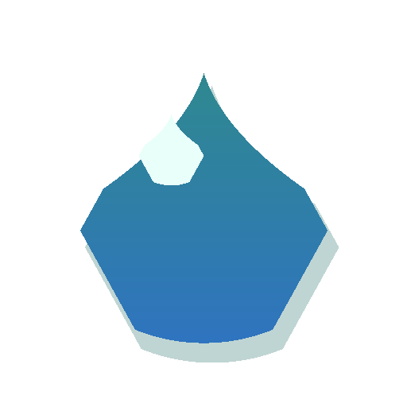

孕期喝水提醒
今天陪她喝够水
参考目标：每天 1.9-2.8 L，少量多次喝。

0%
0 / 2400 ml
提醒时间
未开启孕期饮水参考
以医生建议为准- 常见参考：每天约 8-12 杯水，约 1.9-2.8 L。
- 天气热、出汗多、运动后，通常要适当增加。
- 尿液淡黄色通常说明水分比较够；很深、头晕、口干要留意。
- 如果医生限制饮水，或有肾脏问题、明显水肿、高血压等情况，按医生说的来。